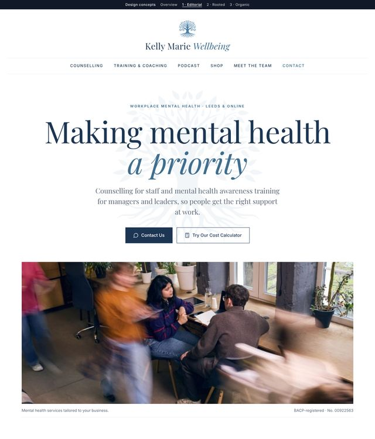
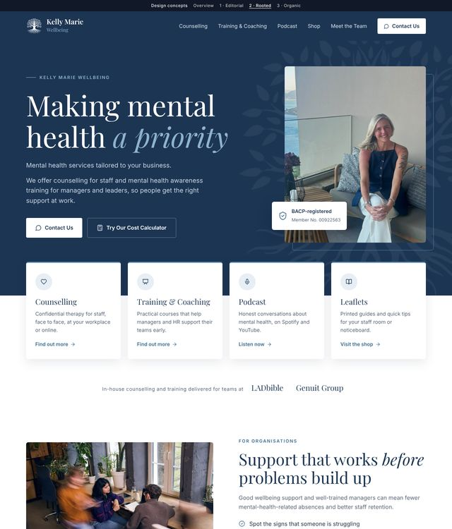
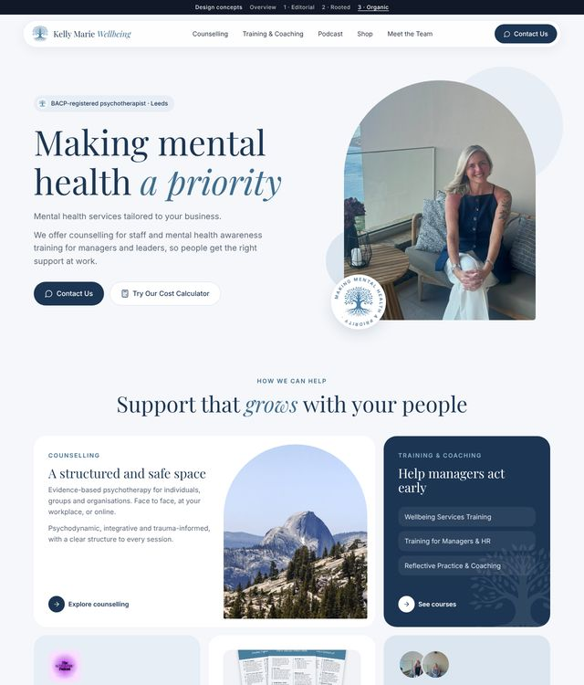

1 · Editorial
Calm and magazine-like. Centred logo masthead, big serif headline, numbered services, a pull quote from Kelly.

2 · Rooted
Bold and corporate. Navy hero with a large white tree, Kelly's portrait and BACP badge, overlapping service cards, enquiry form.

3 · Organic
Soft and friendly. Floating pill menu, arch-shaped photos, rounded bento grid of everything on offer, gentle three-step process.